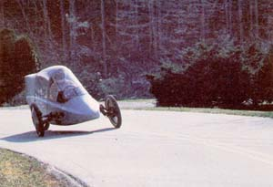
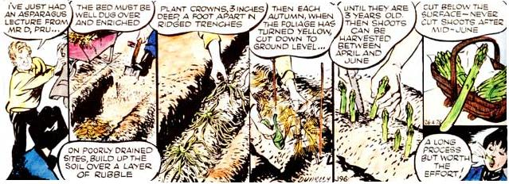

Three-wheeled vehicles are nothing new, but when they behave like motorcycles, people say...
A decade or so ago, it used to be that motorcycles and tiny sports cars got a lot of bad press, so to speak. After all, "nice" people didn't drive machines like that. Practical folks often kept their distance because such conveyances seemed to be more fun than functional. And besides, everyone knew that a vehicle's true measures of quality were its size and ride.
Well, that's all been changed ... and it's happened pretty quickly, too. So quickly, in fact, that while Detroit was still fiddle-fumbling around trying to get better fuel economy and meet federal emissions requirements - using essentially the same huge, heavy turnpike cruisers they'd been building all along-foreign manufacturers (some with 50 years of small-car-making experience under their belts) filled the market with tested and proven subcompact sedans. These imports not only did nearly everything a domestic car would do, but did it for a lot less money.
Today, Motor City engineers are scrambling to beat the competition at their own game, but in the quest for stellar MPG figures and acceptable emissions levels, something seems to get lost: excitement.
And the funny thing about excitement is that it usually comes at a price ... a sky diver, for instance, knows there'll be hell to pay if the chute doesn't open. But thrills and risk don't necessarily go hand in hand (have you ever ridden a roller coaster?) ... and maybe that's as good a way as any to explain the vehicle you see here.
It's important to understand, right from the onset, that it's not a car. By the same token, though, it's not exactly a motorcycle, either. It's an entirely new road machine that's been designed to find a place somewhere between a motorcycle and a small car ... and once you realize that, it's clear that we're talking about a vehicle which combines the best features of both.
This machine-designed and put together by MOTHER's founder, John Shuttleworth, and members of our research crewwas conceived three years ago and has been under development ever since. From the photograph, you can see that it leans (almost 20') into turns, and has narrow, large-diameter wheels like a cycle ... but at the same time you'll note that the body is designed for high aerodynamic efficiency. This, in combination with a wellbalanced, lively engine and motorcycle-like weight, gives us a road-burner that'll out-handle and out-perform more traditional cars, while still [1] sipping, rather than guzzling, precious gasoline ... [2] providing a level of comfort and safety not dreamed of with even the best touring cycles ... [3] furnishing room for two occupants and three or four sacks of groceries, a couple of day packs, or maybe even a set of golf clubs ... [4] giving the driver a sporting chance at some tight parking spaces for a change ... and [5] offering anyone who gets behind the wheel an opportunity to really enjoy driving without risking his or her hide!
If you're interested, we don't blame you. But if you want to find out more about what's going on here, you'll just have to wait for our next issue ... where we'll fill you in on what we believe to be the state of the art in practical performance vehicles.
Issue No. 80 - March/April 1983
The cartoon feature below was originally created for
readers of the London Daily Mirror ... which explains
why its advice is often couched in peculiarly British
term. Despite the occasionally strange language,
however, we think you'll find Mr. D's garden tips
interesting and useful on this side of the pond, too.
|
 STAFF PHOTO |
 |
|